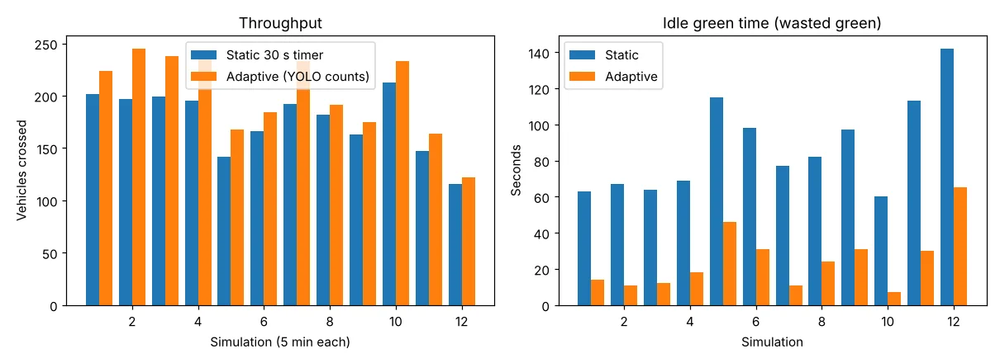

Adaptive Traffic Signals
Counting vehicles on CCTV to give green time where the queue is
YOLOv8 detects and tracks every vehicle and counts it per lane, and an adaptive timer turns those counts into green time. In a 12-run junction simulation it moved 14.1% more vehicles than a fixed 30-second timer and cut wasted green by 71%.
From camera to signal
pipeline + simulation results- 01CCTV feedvideo or RTSP stream
- 02DetectYOLOv8: car, bike, bus, truck, bicycle
- 03Track + countByteTrack IDs · stop-line crossings per lane
- 04DensityPCU inside the region of interest
- 05Green timeper-class clear time, clamped 10–60 s
- 06Logannotated video · CSV · JSON summary
Vehicles crossed in 12 runs (higher is better)
Average delay, every vehicle (lower is better)
~/screens
See it working

[01] ~/the-problem
Why it matters
Most Indian junctions run fixed-time signals: every approach gets the same green whether 40 vehicles are queued or none. Green is wasted on empty roads while the busy approaches stay jammed.
Loop detectors and pressure mats are expensive to install and maintain. Most junctions already have CCTV, so a camera-based count can drive the timer without new hardware in the road.
The adaptive timer keeps the signal order fixed, as in the paper; only the durations change, so drivers still see a familiar sequence.
[02] ~/how-it-works
How it works
Detect, track and count, then turn counts into green time that never starves an approach.
- 01
Detect vehicles
COCO-pretrained YOLOv8 finds cars, motorbikes, buses, trucks and bicycles in each frame; a region of interest ignores footpaths and parked cars.
- 02
Track and count
ByteTrack gives every vehicle an ID, so each one is counted once as it crosses the virtual stop line, lane by lane.
- 03
Weigh by class
Each vehicle class has its own clear time, so a bus counts for more than a motorbike when the green is worked out.
- 04
Compute green
Green = ⌈Σ(count × clear time) / (lanes + 1)⌉ + start-up lag, clamped to 10–60 s so no approach is starved.
- 05
Simulate fairly
A 4-way junction simulator runs 12 five-minute scenarios with 90% detection recall, comparing static and adaptive control as in the paper.
- 06
Go beyond the paper
A demand-ordered mode also chooses which approach goes next and caps waiting near 90 s, cutting average delay for every vehicle by 21%.
[03] ~/results
Results
12 simulated runs × 5 minutes with unbalanced demand. The paper reports about 15% over static control; this reimplementation measures 14.1%.
| CONTROLLER | VEHICLES CROSSED | IDLE GREEN / RUN | WAIT (CROSSED) | DELAY (ALL) | LEFT QUEUED |
|---|---|---|---|---|---|
| Demand-ordered | 2,450 | – | – | 54.3 s | 111 |
| Adaptive (paper) | 2,412 | 25.0 s | 62.6 s | 59.2 s | 114 |
| Static 30 s | 2,114 | 87.2 s | 64.8 s | 68.5 s | 139 |
Average wait for vehicles that got through barely moves (−3%). Counting every vehicle, including those still queued at the end, shows the real gain: −14% adaptive, −21% demand-ordered.
HONEST LIMITS
Results come from a simulator with 90% detection recall, not a live junction; the sample video proves counting works, not that real traffic improves.
COCO classes miss auto-rickshaws and emergency vehicles; fine-tuning on the India Driving Dataset would add them.
WHAT I’D DO NEXT
→ Emergency-vehicle priority (ambulance → immediate green)
→ Red-light violation detection at the stop line
→ Accident and breakdown alerts from stationary tracks
→ A field pilot at one real junction